Integrator Anti-Windup¶
This article introduces the concept of integrator windup in control systems and techniques that can be implemented in the AMDC to mitigate performance degradation due to actuator saturation.
Integrator windup can occur when a controller with an integrator faces limitations on the manipulated variables. The effectiveness of an anti-windup strategy depends on both the duration and the extent of actuator saturation. Since perfect anti-windup is unachievable, it is important to analyze anti-windup techniques under expected actuator saturation scenarios. To help readers understand this, an example Simulink model is provided in this article to demonstrate how such scenarios can be studied.
Windup Phenomena in Integrators¶
A generalized control system is now introduced and used to explain the phenomenon of integrator windup. This control system is progressively refined in later sections to introduce anti-windup techniques.
Block Diagram with Saturation¶
The primary components of a control diagram are the controller and plant. The controller’s output actuates the plant and is referred to as the “manipulated variable” in this article. In practice, manipulated variables are limited by the actuator’s capability. The figure below illustrates a practical block diagram representation, where the actuator limitations are modeled with a Saturation block.
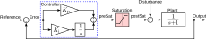
In this example, a simple plant model of \(1/(s+1)\) is employed, with the saturation block located before the plant. The saturation block produces an output signal bounded to the upper saturation value of +Limit and lower saturation value of -Limit. This type of first order system is found in many physical systems where the AMDC is used. Examples include:
Current regulation:
Manipulated variable: Voltage
Plant output: Current
Physical limitation: The power amplifier’s voltage to the plant is restricted by its DC power supply
Speed control:
Manipulated variable: Torque (\(q\)-axis current)
Output: Rotational speed of the electric machinery
Physical limitation: The torque provided to the plant is limited by the motor’s torque (or power electronic amplifier current) rating.
Temperature control:
Manipulated variable: Heat
Output: System temperature
Physical limitation: The heater’s power rating (e.g., 1 kW).
The PI controller is employed to achieve the desired system response. In this article, the PI gains are set to achieve a first order response with a bandwidth of 10 Hz, i.e., \(K_\text{p} = 2\pi \times 10\), and \(K_\text{i} = 2\pi \times 10\).
Technical Challenges with Windup¶
This section provides an overview of practical challenges due to actuator input limitations to command tracking and disturbance rejection and introduces the definition of integrator windup. The system depicted in the block diagram above is simulated to demonstrate two windup scenarios. The objective of this analysis is to evaluate the impact of the actuator limitation (modeled with the saturation block in the diagram) on the output performance.
Command Tracking with Actuator Limitations¶
Command tracking simulation results are shown below, where two scenarios are compared: one “without saturation block” (red line) and one “with the saturation block” (blue line). Assume a step command of 1 is generated as a reference at 0.2 seconds and the plant has a known input saturation limit defined as Limit = 10.
{kind=link}
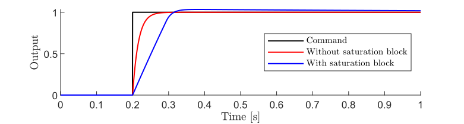
{kind=link}
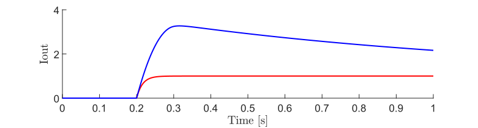
As observed in the top figure, the command tracks correctly when no saturation block is present (no actuator limitations), whereas overshoot occurs when the saturation block is included (the practical scenario). The bottom figure illustrates the output of the integrator Iout. With the saturation block, Iout becomes larger than that without the saturation block.
Let us examine why this phenomenon occurs by analyzing the manipulated variable before and after the saturation block.
{kind=link}
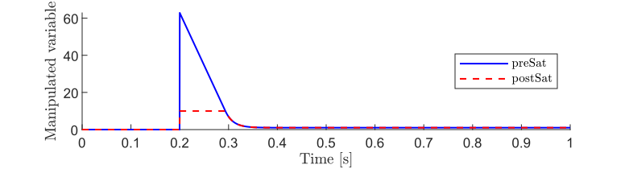
The input to the saturation block (preSat) is the unsaturated manipulated variable. This instantaneously exceeds 60, which is beyond the saturation range of 10. In contrast, the manipulated variable after the saturation block (postSat) is limited to 10. As demonstrated in this example, the controller disregards the presence of the saturation block because it has no information about real-world saturation. Consequently, the PI controller continues to try to increase the manipulated variable as long as the error is nonzero. If this error is continuously accumulated, the system exhibits delayed convergence, a condition known as integrator windup.
Disturbance Suppression with Actuator Limitations¶
Disturbances can degrade the system performance by introducing unexpected dynamics. Let us examine how disturbances affect the behavior of the integrator. In this scenario, the reference command is set as 0 and a disturbance of 15 (i.e., higher value than Limit = 10) is injected at 0.2 seconds and ends at 0.4 seconds. The disturbance causes the plant output variable to deviate from the reference until the controller takes sufficient action via the manipulated variable.
{kind=link}
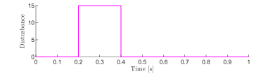
{kind=link}
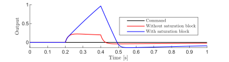
In the transient response of Output, when the disturbance ends it is observed that with the saturation block, there is a larger negative overshoot and slower convergence to 0 compared to the case without the saturation block. This is because the integrator continues to integrate error caused by the disturbance despite its accumulate value not resulting in changes to the manipulated variable.
Anti-Windup Techniques¶
To avoid integrator windup, anti-windup techniques are now introduced. The block diagram incorporating an integrator with anti-windup is shown in the figure below.
The goal of anti-windup methods is to configure the integrator so that it does not integrate to grow the manipulated variable beyond what the actuator is capable of realizing. In terms of the block diagram, this means that if the manipulated variable reaches the specified Limit of the saturation block, the integrator stops integrating.
There are multiple ways to implement integrator anti-windup. The following two common methods are introduced in this article:
Clamping: Turn off the integrator to stop further accumulation of the value. This can be divided into two methods, i.e., simple clamping and advanced clamping.
Back-tracking: Subtract a specific value from the integrator.
These two methods are now explained in detail.
Clamping¶
Clamping is a straightforward anti-windup strategy where the integrator is “clamped” to prevent it from exceeding a certain limitation. This article presents two implementations that differ based on the logic determining when the integrator clamps.
Simple Clamping¶
The “simple” version of clamping stops integrating when preSat \(\neq\) postSat. The contents of the Integrator with anti-windup block are shown below for this method.
{kind=link}
The Simulink simulation of tracking a step command introduced earlier is now repeated with simple clamping. Results are shown below:
Command Tracking¶
{kind=link}
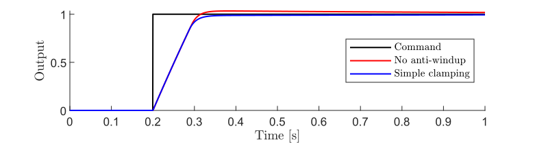
{kind=link}
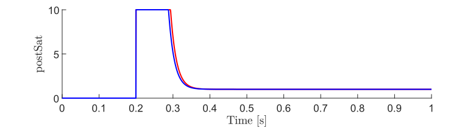
{kind=link}
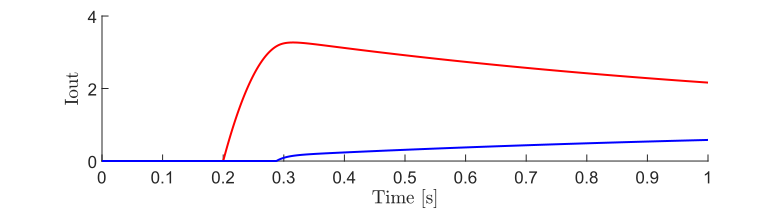
In the Output waveforms, an overshoot is observed when there is no anti-windup. However, with the simple clamping method, the overshoot is eliminated.
The reasons for this improvement can be understood by studying the postSat and Iout waveforms. In postSat, the manipulated variables are saturated at 10, which causes Iout to rapidly increase when there is no anti-windup. However, the simple clamping technique prevents the integrator from accumulating a value beyond the saturation block limit. This leaves the controller ready to respond rapidly when the error decreases toward zero.
Disturbance Suppression¶
The previously considered disturbance scenario is also simulated for simple clamping.
{kind=link}
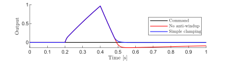
The simulation results show that the overshoot and convergence are significantly improved when the simple clamping method is employed.
Advanced Clamping¶
Now, the advanced version of clamping is introduced as shown in the block diagram below.
{kind=link}
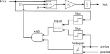
In the advanced clamping method, the behavior itself is essentially similar to that of simple clamping. However, it includes an additional condition as a trigger of anti-windup so that the integrator does not clamp if further integration would reduce windup. That is, the integrator will not clamp if the sign of Error is opposite to the sign of preSat.
The implementation of advanced clamping can be understood as a set of sequential steps as follows:
Step 1. Compare the preSat and postSat. If these values are not equal, i.e., the manipulated variable reaches saturation, the block outputs 1. If they are equal, then no saturation takes place, and the block outputs 0 – this is the same behavior as the simple clamping method.
Step 2. Compare the sign of the preSat and the Error. And then, if both signs are equal, the block outputs 1. If not, the block outputs 0 – this is the additional condition necessary for advanced clamping.
Step 3. The anti-windup output denoted as tracking-signal TR becomes 1 to clamp the integrator only if both outputs of Step 1 and Step 2 are 1.
If TR is 1, the input of the integrator becomes 0 as the switch is triggered, i.e., the integrator will effectively shut down the integration during the windup condition.
The previously presented simulation of command tracking is repeated with advanced clamping, with results shown below.
{kind=link}
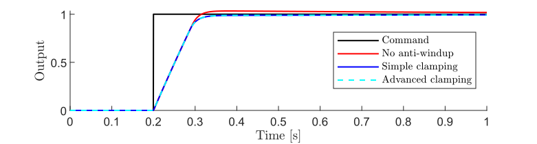
{kind=link}
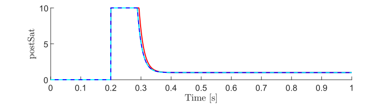
{kind=link}
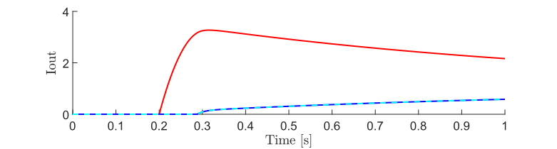
Notice that the above assumptions cause the simple and advanced clamping to behave identically in this example.
To demonstrate the performance advantage of advanced clamping, a highly specific scenario is introduced. For this simulation, the proportional gain \(K_\text{p}\) is artificially reduced to an exceptionally low value (\(K_\text{p}= 0.0001 \times 2\pi \times 10\)). The scenario simulates the following:
A
Disturbancewith an amplitude of 3 is applied at 0.5 seconds, causing the system to saturate.Once the
Outputhas stabilized at 0, a positive reference of 1 is commanded at 5 seconds.
Here are simulation results based on the above scenarios:
{kind=link}
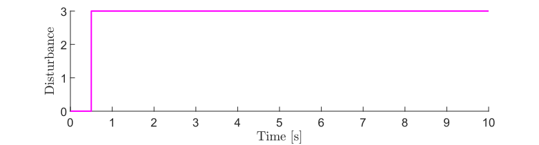
{kind=link}
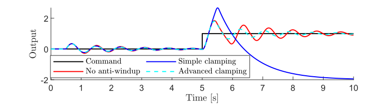
{kind=link}
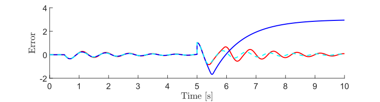
{kind=link}
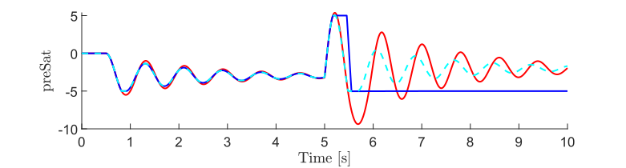
As indicated in the Output plot, the advanced clamping method performs well. Conversely, the simple clamping method fails to track the reference entirely and performs even worse than having no anti-windup in this edge-case scenario.
Significant differences in the advanced clamping only appear when the system is saturated and the Error and preSat signals have opposite signs. In this example, Error suddenly becomes positive at 5 seconds. However, because we set \(K_\text{p}\) to an artificially low value, the immediate proportional response (\(K_\text{p} \times \mathrm{Error}\)) is too weak to overcome the integrator’s output. As a result, preSat remains negative. This breaks the equal sign condition (i.e., Error does not have the same sign as the preSat), which causes the advanced clamping logic to unclamp the integrator, allowing the system to recover.
While very significant improvements in performance are observed in the waveforms above through the use of advanced clamping, this result was obtained by setting an exceptionally low \(K_\text{p}\) gain. In systems with standard proportional gains, a change in the error’s direction likely produces an instantaneous proportional response large enough to eliminate the drawbacks of simple clamping.
Example systems where advanced clamping may be important are current regulators for electric machines that have very low inductance \(L\) relative to resistance \(R\). The typical control tuning for motors involves selecting \(K_\text{p}\) and \(K_\text{i}\) to cancel the plant’s \(RL\) pole, resulting in the relationship \(K_\text{p} = \tfrac{L}{R}K_\text{i}\). Machines that are likely to exhibit exceedingly low inductances typically have coreless, slotless, or PCB stators and are being increasingly developed in ultra-lightweight applications, such as electric aircraft.
Back-tracking¶
The idea of back-tracking method is to use a feedback loop to unwind the internal integrator when the manipulated variable hits the Limit. The block diagram of the integrator with the back-tracking method is shown below.
{kind=link}
For example, if saturation occurs, TR is calculated as TR = Kb(postSat-preSat) and added into the integrator to avoid the windup, where \(K_\text{b}\) is a feedback gain of the back-tracking. In contrast, if the saturation does not occur, preSat and postSat must be equal, and TR is 0, i.e., the anti-windup is deactivated.
The selection of \(K_\text{b}\) is nuanced and depends upon the specific event being managed. Making an incorrect choice for \(K_\text{b}\) can lead to inferior performance as compared to the clamping method. In practice, the feedback gain of \(K_\text{b}\) is often determined by trial and error, depending on the user’s requirements, such as the allowable overshoot and desired response speed. Reference [1] shows an example of how to determine \(K_\text{b}\) that is known as a conditioned PI controller. Here, \(K_\text{b} = K_\text{i}/K_\text{p}\). For detailed information, refer to this paper.
The simulations presented earlier in this article are now re-considered with the back-tracking anti-windup method. In these simulations, \(K_\text{b} = K_\text{i}/K_\text{p}\).
Command Tracking¶
{kind=link}
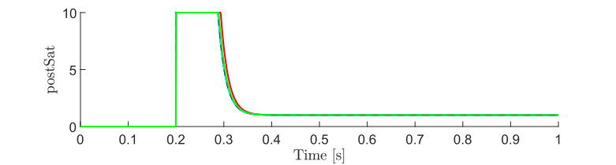
{kind=link}
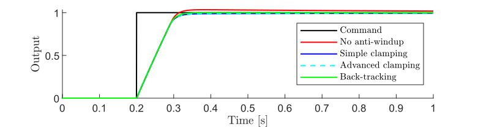
{kind=link}
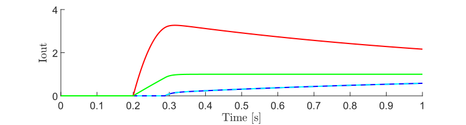
From the Output waveform, it is evident that the back-tracking technique marginally improves the response over clamping.
Disturbance Suppression¶
{kind=link}
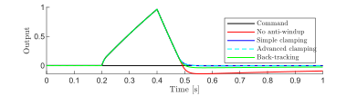
The disturbance suppression results demonstrate that both the clamping and the back-tracking methods improved performance over having no anti-windup. Interestingly, for this example, the clamping methods yield better performance. However, this is not a general result and careful tuning of \(K_\text{b}\) can likely offer enhanced back-tracking performance.
References¶
R. Hanus, M. Kinnaert, and J-L. Henrotte, “Conditioning technique, a general anti-windup and bumpless transfer method,” in Automatica 23, no. 6, pp. 729-739, 1987, doi: 10.1016/0005-1098(87)90029-X.